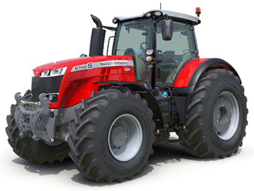
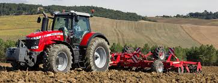
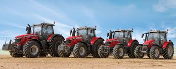
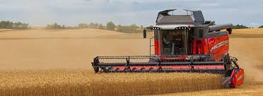
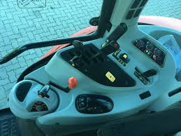
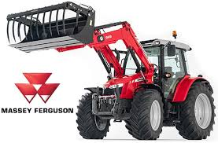

Ez az oldal alra szolgál, hogy az életem egy részét bemutasam nektek.

Amint már említettem, hogy van hobbim.
Most pedig mutatok róla egypár képet.

második

harmadik

negyedik

ötödik

hatodik
Szeretném nektek bemutatni a kedvenc traktoromat.
Ez a szerkezet igen nagy súlyokat képes mozgatni akár a földben akárcsak vontatva.
Nagyon egyszereű vezetni,de a kezelése igazi fejtörő.
Annyira öszzetet mint egy pazül egy elem hiányzik nincs meg a teljes kép.
Szeretném nektek bemutatni a kedvenc kombájnomat.
Ez a szerkezet takarítja be a már aratásra érett terményeket.
Ennek a szerekezete már érdekesebbmás vele fordulni mint egy traktorral.
Egy tipp ha még nem vezettél ilyet ne menny egyedül mert könnyen meg van a baj.
A leírás oldalt található! ->.